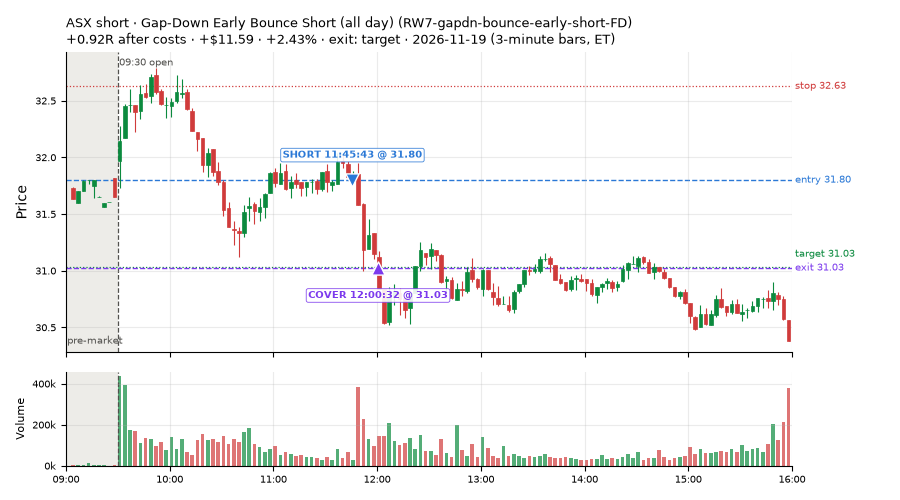
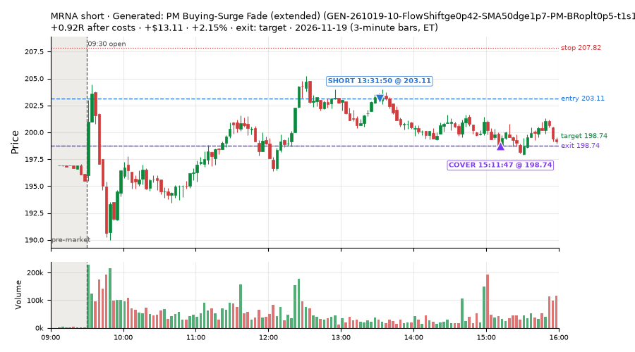
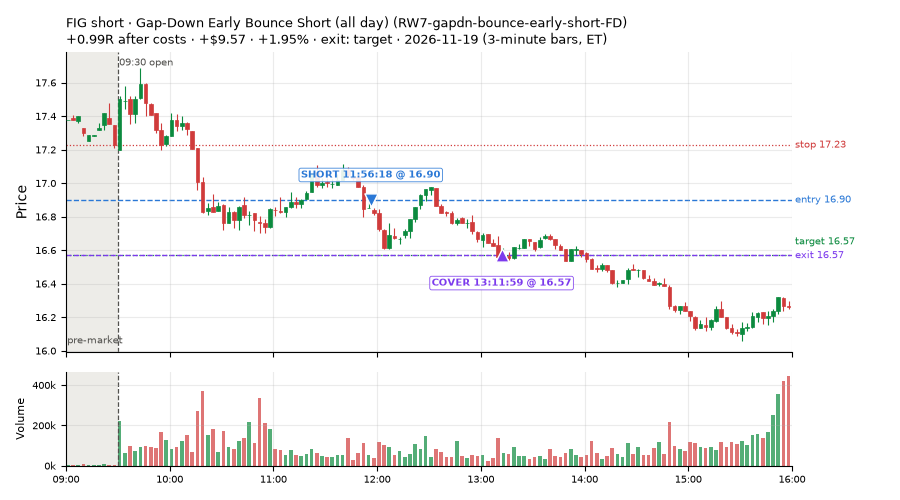
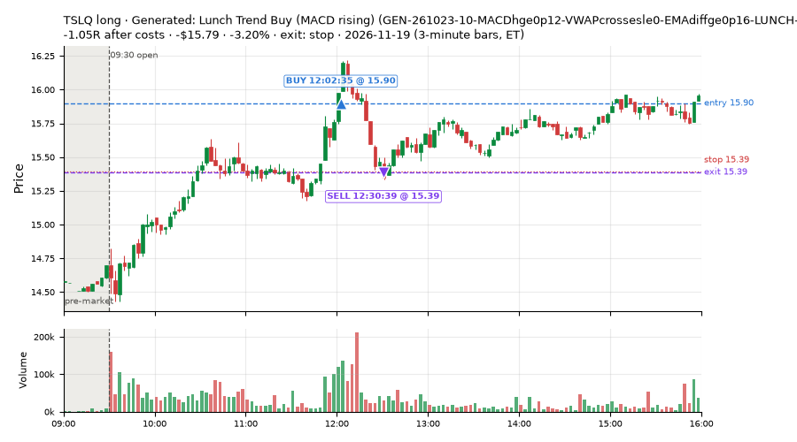
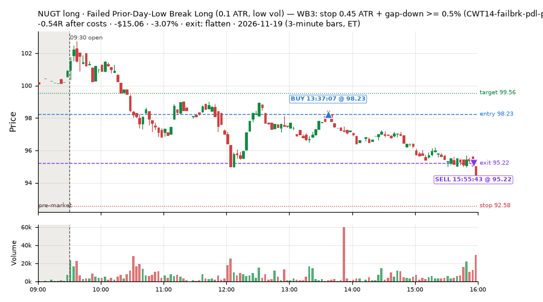
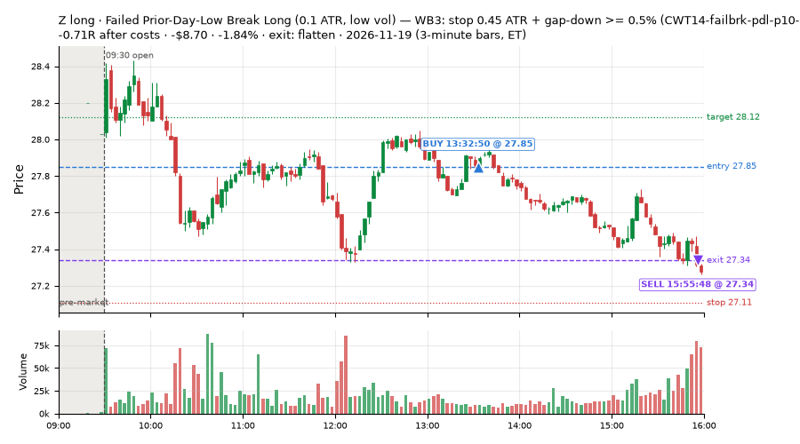
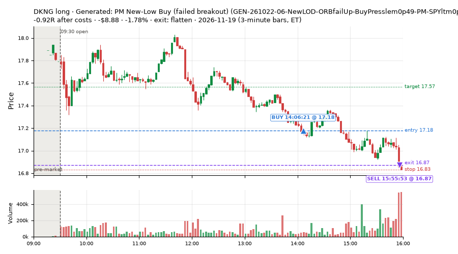

114 trades · win rate 61% · P/L $-31.83
PROBATION: no live setup has passed both locked test periods. 10 owner-directed setups added 2026-10-08 (MarcoFlow top 5 + 5 new), untested live. RW6G1 (RW6 + VWAP band guard) added 2026-10-09, probation.

| Symbol | Setup | Side | In | Out | Entry | Exit | Exit reason | % gained | P/L |
|---|---|---|---|---|---|---|---|---|---|
| ASX | Gap-Down Early Bounce Short (all day) (RW7-gapdn-bounce-early-short-FD) | short | 11:45 | 12:00 | 31.80 | 31.03 | target | +2.43% | $11.59 |
| MRNA | Generated: PM Buying-Surge Fade (extended) (GEN-261019-10-FlowShiftge0p42-SMA50dge1p7-PM-BRoplt0p5-t1s1-short) | short | 13:31 | 15:11 | 203.11 | 198.74 | target | +2.15% | $13.11 |
| FIG | Gap-Down Early Bounce Short (all day) (RW7-gapdn-bounce-early-short-FD) | short | 11:56 | 13:11 | 16.90 | 16.57 | target | +1.95% | $9.57 |
| Symbol | Setup | Side | In | Out | Entry | Exit | Exit reason | % lost | P/L |
|---|---|---|---|---|---|---|---|---|---|
| TSLQ | GEN-261023-10-MACDhge0p12-VWAPcrossesle0-EMAdiffge0p16-LUNCH-BRvwlt0p4-hold-long | long | 12:02 | 12:30 | 15.90 | 15.39 | stop | -3.20% | $-15.79 |
| INIO | LD5-st2-breadthup-t05s1-long | long | 11:06 | 12:02 | 13.63 | 13.21 | stop | -3.08% | $-15.12 |
| NUGT | CWT14-failbrk-pdl-p10-lowvol-long-WB3 | long | 13:37 | 15:55 | 98.23 | 95.22 | flatten | -3.07% | $-15.06 |
| Z | CWT14-failbrk-pdl-p10-lowvol-long-WB3 | long | 13:32 | 15:55 | 27.85 | 27.34 | flatten | -1.84% | $-8.70 |
| DKNG | GEN-261022-06-NewLOD-ORBfailUp-BuyPresslem0p49-PM-SPYltm0p5-t1s1-long | long | 14:06 | 15:55 | 17.18 | 16.87 | flatten | -1.78% | $-8.88 |







Signal to fill: median 2s, 90th percentile 3s (114 trades). Bars close each minute; the order follows the bar close.
Best excursion (MFE): median 0.42R; worst (MAE) median 0.44R. 35% of trades never got +0.25R in our favour; 5 reached +1R and still closed at or below 0.
| Symbol | Setup | Best R | Worst R | Closed R |
|---|---|---|---|---|
| SPY | intraday_momentum | +4.42 | -0.22 | +0.19 |
| SPXS | GEN-261019-10-FlowShiftge0p42-SMA50dge1p7-PM-BRoplt0p5-t1s1-short | +1.85 | -1.09 | -1.10 |
| SQQQ | GEN-261019-10-FlowShiftge0p42-SMA50dge1p7-PM-BRoplt0p5-t1s1-short | +1.46 | -1.40 | -1.14 |
| SPXS | L3-gap-slope-lowdist-FD-WB4 | +1.34 | -1.60 | -1.21 |
| SPXS | exhaustion_short | +0.98 | -1.07 | -1.11 |
| Entry time | Trades | Win | Avg R | P/L |
|---|---|---|---|---|
| 09:50-10:30 | 4 | 75% | -0.12 | $0.09 |
| 10:30-11:30 | 15 | 47% | -0.29 | $-27.92 |
| 11:30-13:00 | 64 | 70% | +0.05 | $7.97 |
| 13:00-14:00 | 22 | 50% | -0.03 | $3.37 |
| 14:00-16:00 | 9 | 44% | -0.16 | $-15.34 |
| Setup | Trades | Win | Avg R after costs | Adj R (net of SPY) | Avg R ex-market (all sessions) | P/L |
|---|---|---|---|---|---|---|
| Panic Flush Reversal (3x volume) (CWT05-flush-m05-v3-long) | 24.0 | 88% | +0.05 | +0.02 | -0.03 (beta +0.81, n 43) | $-3.26 |
| Failed Prior-Day-Low Break Long (0.1 ATR, low vol) — WB3: stop 0.45 ATR + gap-down >= 0.5% (CWT14-failbrk-pdl-p10-lowvol-long-WB3) | 18.0 | 50% | -0.32 | +0.27 | -0.18 (beta +0.51, n 64) | $-51.59 |
| Generated: PM Buying-Surge Fade (extended) (GEN-261019-10-FlowShiftge0p42-SMA50dge1p7-PM-BRoplt0p5-t1s1-short) | 4.0 | 25% | -0.61 | -0.95 | +0.15 (beta +0.11, n 27) | $0.70 |
| Generated: Midday VWAP Loss Buy (fading) (GEN-261020-06-VWAPxDn-Slope6lem0p011-BarsSinceHODge35-MID-BRoplt0p5-holdtr-long) | 1.0 | 0% | -1.23 | -0.48 | -0.95 (beta +0.40, n 12) | $-7.32 |
| Generated: Late-AM Strong-Stock Dip Buy (GEN-261021-05-RSIslopelem14-ORHdistge0p42-LAM-BRvwlt0p3-t1s05-long) | 1.0 | 100% | +0.53 | +0.44 | -0.33 (beta +2.36, n 5) | $1.95 |
| Generated: PM New-Low Buy (failed breakout) (GEN-261022-06-NewLOD-ORBfailUp-BuyPresslem0p49-PM-SPYltm0p5-t1s1-long) | 3.0 | 0% | -0.37 | +0.08 | -0.21 (beta +0.70, n 23) | $-9.66 |
| Generated: Lunch Trend Buy (MACD rising) (GEN-261023-10-MACDhge0p12-VWAPcrossesle0-EMAdiffge0p16-LUNCH-BRvwlt0p4-hold-long) | 3.0 | 0% | -1.05 | -1.13 | -0.72 (beta -0.37, n 7) | $-32.75 |
| Gap-Down Bounce-off-Low Fade (all day) — WB4: bounce > 0.82 ATR, RSI5 ≥ 50, 75-min hold (L3-gap-slope-lowdist-FD-WB4) | 2.0 | 0% | -1.18 | -1.55 | – | $-10.69 |
| * Oversold Slope Turn with Breadth Turning Up (near-miss) (LD5-st2-breadthup-t05s1-long) | 1.0 | 0% | -1.11 | -0.75 | – | $-15.12 |
| Gap-Down Early Bounce Short (all day) (RW7-gapdn-bounce-early-short-FD) | 50.0 | 66% | +0.19 | -0.58 | -0.10 (beta -0.80, n 250) | $83.76 |
| Afternoon Blow-off Short (exhaustion_short) failed Apr-Jun holdout: -0.020R/trade over 622 trades | 5.0 | 60% | +0.25 | -0.19 | -0.10 (beta -0.92, n 46) | $10.23 |
| Index Last-Half-Hour Momentum (intraday_momentum) failed Apr-Jun holdout: -0.091R/trade over 147 trades | 2.0 | 100% | +0.19 | -0.05 | +0.04 (beta -0.80, n 16) | $1.92 |
Market direction (SPY, beta 1) accounted for $116.61 of today's $-31.83; the rest ($-148.44) came from the setups themselves. Avg R net of SPY: -0.31 (incl. a hedge leg's cost; report only).
23 setups live today. Today: 267 signals, 114 taken, 4 lost because another setup held the symbol (2%). Since 2026-11-12 (6 sessions): 1320 signals, 613 taken, 10 lost to other setups (1%). Peak open positions today 48 of 400 slots. Earnings blackout removed 209 symbols before scanning.
Simulated playing time (not live): 705 what-if trades of signals not taken, avg -0.02R, 54% winners; of them 10 lost to another setup (avg -0.15R).
Silent: IDX3-spy075-0955-3x-trail, GEN-261028-04-ORBfailUp-RSI14le22-Gaplem1p2-LATE-BRvwgt0p5-holdtr-long · Starved: MF1-945-flowsell-vwapup
| Prio | Setup | Today sig / taken | Sessions | Signals / taken / trades | Taken/day | Expected/day | Lost to other setups | Lost to (setup n) | Top skip reasons | SIMULATED: not-taken n / avg R / win | Verdict |
|---|---|---|---|---|---|---|---|---|---|---|---|
| 1 | Gap-Down Bounce-off-Low Fade (all day) — WB4: bounce > 0.82 ATR, RSI5 ≥ 50, 75-min hold L3-gap-slope-lowdist-FD-WB4 | 37 / 2 | 3 | 50 / 3 / 3 | 1.00 | – | 0 | – | not shortable / shorts off 40, spread / quote / size 6, other 1 | 47 / -0.53R / 28% | slow 5.0 entries/week; ~12 weeks to 60 trades |
| 2 | Failed Prior-Day-Low Break Long (0.1 ATR, low vol) — WB3: stop 0.45 ATR + gap-down >= 0.5% CWT14-failbrk-pdl-p10-lowvol-long-WB3 | 23 / 18 | 3 | 95 / 64 / 64 | 21.33 | – | 1 | RW7-gapdn-bounce-early-short-FD 1 | spread / quote / size 23, other 7, symbol held by another setup 1 | 30 / -0.04R / 77% | ok 106.7 entries/week |
| 3 | Gap-Down VWAP Loss Short (10% gap) — WB4: below open, real bounce, ADV 20M CWT09-gapdn-vwaploss-g10-short-WB4 | 1 / 0 | 3 | 2 / 0 / 0 | 0.00 | – | 0 | – | not shortable / shorts off 2 | 2 / -0.08R / 0% | slow no entries yet |
| 4 | Index Dip Bounce 3 3x S&P IDX3-spy075-0955-3x-trail | 0 / 0 | 6 | 0 / 0 / 0 | 0.00 | – | 0 | – | – | 0 / – | silent no signals in 6 session(s); no expected rate on file |
| 5 | * Oversold Slope Turn with Breadth Turning Up (near-miss) LD5-st2-breadthup-t05s1-long | 1 / 1 | 6 | 4 / 4 / 4 | 0.67 | – | 0 | – | – | 0 / – | slow 3.3 entries/week; ~18 weeks to 60 trades |
| 6 | Generated: Late-AM Strong-Stock Dip Buy GEN-261021-05-RSIslopelem14-ORHdistge0p42-LAM-BRvwlt0p3-t1s05-long | 12 / 1 | 4 | 34 / 5 / 5 | 1.25 | – | 0 | – | other 22, spread / quote / size 7 | 29 / +0.52R / 62% | slow 6.2 entries/week; ~10 weeks to 60 trades |
| 7 | NS2 Short, SPY Up 0.5%, Not Friday (near-miss) NM-RWN4-ns2-spyup05-notfri-short | 0 / 0 | 6 | 105 / 32 / 32 | 5.33 | – | 0 | – | per-setup cap 54, spread / quote / size 14, not shortable / shorts off 4 | 73 / +0.34R / 90% | ok 26.7 entries/week |
| 8 | Quiet Downtrend Bounce Short (near-miss) NM-AMS-N1-quiet-morning-short | 1 / 0 | 6 | 5 / 4 / 4 | 0.67 | – | 0 | – | spread / quote / size 1 | 1 / -1.17R / 0% | slow 3.3 entries/week; ~18 weeks to 60 trades |
| 9 | Generated: Open Range-Expansion Short GEN-261029-09-RangeExpge1p6-Since950ATRlem0p43-OPEN-BRvwgt0p5-hold-short | 0 / 0 | 4 | 2 / 0 / 0 | 0.00 | – | 0 | – | other 2 | 2 / -1.21R / 0% | slow no entries yet |
| 10 | Generated: Midday VWAP Loss Buy (fading) GEN-261020-06-VWAPxDn-Slope6lem0p011-BarsSinceHODge35-MID-BRoplt0p5-holdtr-long | 1 / 1 | 4 | 27 / 12 / 12 | 3.00 | – | 1 | RW7-gapdn-bounce-early-short-FD 1 | other 8, spread / quote / size 6, symbol held by another setup 1 | 15 / -0.94R / 0% | ok 15.0 entries/week |
| 11 | Generated: PM Lower-Band Dip Buy (uptrend) GEN-261019-02-BBpctle0p017-SMA20slopege0p46-PM-QQQdn-t05s1-long | 0 / 0 | 4 | 8 / 5 / 5 | 1.25 | – | 0 | – | other 3 | 3 / +0.06R / 67% | slow 6.2 entries/week; ~10 weeks to 60 trades |
| 12 | Generated: Lunch Trend Buy (MACD rising) GEN-261023-10-MACDhge0p12-VWAPcrossesle0-EMAdiffge0p16-LUNCH-BRvwlt0p4-hold-long | 5 / 3 | 4 | 13 / 7 / 7 | 1.75 | – | 0 | – | other 5, spread / quote / size 1 | 6 / -0.33R / 33% | slow 8.8 entries/week; ~7 weeks to 60 trades |
| 13 | Generated: PM New-Low Buy (failed breakout) GEN-261022-06-NewLOD-ORBfailUp-BuyPresslem0p49-PM-SPYltm0p5-t1s1-long | 4 / 3 | 4 | 29 / 23 / 23 | 5.75 | – | 1 | RW7-gapdn-bounce-early-short-FD 1 | other 4, symbol held by another setup 1, spread / quote / size 1 | 6 / -0.34R / 0% | ok 28.8 entries/week |
| 14 | Generated: Late Gap-Down Oversold Buy GEN-261028-04-ORBfailUp-RSI14le22-Gaplem1p2-LATE-BRvwgt0p5-holdtr-long | 0 / 0 | 4 | 0 / 0 / 0 | 0.00 | – | 0 | – | – | 0 / – | silent no signals in 4 session(s); no expected rate on file |
| 15 | Generated: Late New-High Short (QQQ down) GEN-261022-03-NewHOD-Ret15mATRge0p12-SMA20dge0p59-LATE-QQQdn-t05s1-short | 1 / 0 | 4 | 11 / 6 / 6 | 1.50 | – | 0 | – | not shortable / shorts off 4, spread / quote / size 1 | 5 / +0.09R / 60% | slow 7.5 entries/week; ~8 weeks to 60 trades |
| 16 | Generated: PM Prior-Low Bounce Short GEN-261022-10-EMAdChgge0p15-ORLdistge0p41-PDLdistle0p14-PM-BRoplt0p5-holdtr-short | 0 / 0 | 4 | 9 / 6 / 6 | 1.50 | – | 0 | – | spread / quote / size 3 | 3 / +0.33R / 100% | slow 7.5 entries/week; ~8 weeks to 60 trades |
| 17 | Generated: PM Buying-Surge Fade (extended) GEN-261019-10-FlowShiftge0p42-SMA50dge1p7-PM-BRoplt0p5-t1s1-short | 23 / 4 | 4 | 78 / 27 / 27 | 6.75 | – | 1 | GEN-261023-10-MACDhge0p12-VWAPcrossesle0-EMAdiffge0p16-LUNCH-BRvwlt0p4-hold-long 1 | not shortable / shorts off 31, spread / quote / size 11, other 8 | 51 / -0.29R / 35% | ok 33.8 entries/week |
| 18 | Early Sellers Above VWAP MF1-945-flowsell-vwapup | 2 / 0 | 6 | 28 / 4 / 4 | 0.67 | 5.33 | 0 | – | spread / quote / size 20, other 3, not shortable / shorts off 1 | 24 / +0.67R / 54% | starved 0.67 entries/day vs ~5.33 expected |
| 19 | Afternoon VWAP Reclaim Fade (all day) NS4-pm-vwap-reclaim-oversold-short-FD | 1 / 0 | 6 | 45 / 19 / 19 | 3.17 | 3.57 | 0 | – | other 11, spread / quote / size 9, not shortable / shorts off 6 | 26 / -0.12R / 50% | ok 15.8 entries/week |
| 20 | Panic Flush Reversal (3x volume) CWT05-flush-m05-v3-long | 50 / 24 | 6 | 93 / 43 / 43 | 7.17 | – | 0 | – | other 29, spread / quote / size 17, price through stop/target 2 | 49 / +0.26R / 86% | ok 35.8 entries/week |
| 21 | Afternoon Blow-off Short exhaustion_short | 13 / 5 | 6 | 97 / 46 / 46 | 7.67 | 12.12 | 0 | – | not shortable / shorts off 32, other 10, spread / quote / size 9 | 51 / -0.10R / 43% | ok 38.3 entries/week |
| 22 | Index Last-Half-Hour Momentum intraday_momentum | 2 / 2 | 6 | 16 / 16 / 16 | 2.67 | 2.37 | 0 | – | – | 0 / – | slow 13.3 entries/week; ~4 weeks to 60 trades |
| 23 | Gap-Down Early Bounce Short (all day) RW7-gapdn-bounce-early-short-FD | 90 / 50 | 4 | 490 / 250 / 250 | 62.50 | 59.92 | 6 | CWT14-failbrk-pdl-p10-lowvol-long-WB3 5, CWT05-flush-m05-v3-long 1 | spread / quote / size 77, other 73, per-setup cap 59 | 240 / +0.04R / 56% | ok 312.5 entries/week |
Every trade is attached as a CSV you can open and edit in Excel or Google Sheets. Live page: https://misiti15.github.io/MCF/live/